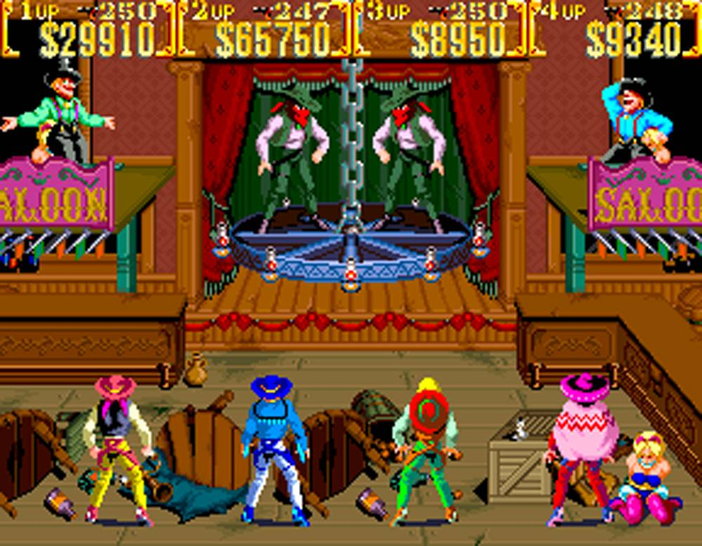

Sunset Riders (サンセットライダーズ Sansetto Raidāzu?) is a side-scrolling run-and-gun style shoot-'em-up released by Konami as a coin-operated video game in 1991. The game is set during the American Old West, where the player takes control of a bounty hunter who is seeking the rewards offered for various criminals. The coin-op version was released in two variants: a 2-player version and a 4-player version. Home versions of Sunset Riders were released for the Sega Mega Drive (Genesis) in 1992 and for the Super Nintendo Entertainment System in 1993.
The game, which is set in a fanciful version of the American Old West, revolves around four bounty hunters who are out to claim rewards given for eliminating the most wanted outlaws in the West. At the beginning of each stage the player is shown a wanted poster, showing the criminal, the reward for stopping them, and the line "Wanted dead or alive".
The player can play as one of four bounty hunters, with their own firearm type. In the 2-player version, each player can choose the character they want to control before starting the game, while in the 4-player version each set of controls is assigned to one specific character. The game's controls consist of an eight-way joystick for moving the character and two buttons for shooting and jumping. The player's gun has unlimited ammunition. The player has the ability to jump, slide and shoot ahead and upwards. In the case of being on upper levels, the player can can shoot downwards (diagonally or vertically) while crouching.[1] There are three types of hidden items. All of the gun power-ups are lost when the player dies. There are a total of eight levels. If the boss is defeated by two or more players, the reward is awarded to the player who deals most damage on the enemy. In addition, there are two bonus rounds, one after Stage 2 and the other after Stage 5.